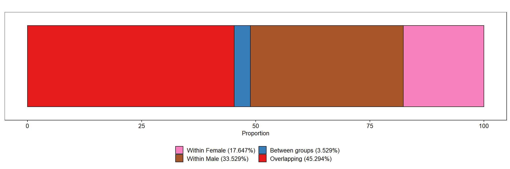
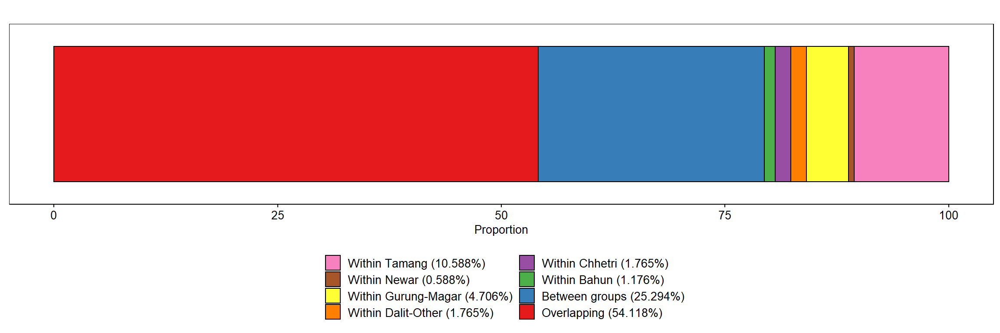

Load Data
dat <- read.delim(file.dat, header = TRUE, stringsAsFactors = FALSE)
# FACTORIZE ---
dat$DISTRICT <- factor(dat$DISTRICT, levels = c("Dhading", "Sindhupalchowk"))
dat$VDC_MUN <- factor(dat$VDC_MUN, levels = c("Gumdi", "Sertung", "Batase", "Pangtang"))
dat$WARD <- as.factor(dat$WARD)
dat$SEX <- factor(dat$SEX, levels = c("Male", "Female"))
dat$ETHNICITY <- factor(dat$ETHNICITY, levels = c("Bahun", "Chhetri", "Dalit-Others",
"Gurung-Magar", "Newar", "Tamang"))
dat$EDUCATION_LEVEL <- factor(dat$EDUCATION_LEVEL, levels = c("Illiterate", "Primary",
"Secondary", "University"))
dat$OCCUPATION <- factor(dat$OCCUPATION, levels = c("Agriculture", "Business", "Goverment Employee",
"Labour", "Teacher"))
dat$INCOME_LEVEL <- factor(dat$INCOME_LEVEL, levels = c("0-2.5K", "2.5-10K", "10-20K",
"20-40K", "40-60K", "60K-Above"))
dat$RECON_COMPLETED <- as.factor(dat$RECON_COMPLETED)
# dat$SATISFACTION_LEVEL <- as.factor(dat$SATISFACTION_LEVEL)
dat$FREEDOM_CHOICE <- as.factor(dat$FREEDOM_CHOICE)
# str(dat)
Calculate Gini of different groups
By Sex
mean_satisfaction_level <- mean(dat$SATISFACTION_LEVEL, na.rm=TRUE)
df_sex1 <- dplyr::group_by(dat, SEX) %>%
dplyr::summarise(count = n(),
mean = round(mean(SATISFACTION_LEVEL, na.rm = TRUE), 3),
sd = round(sd(SATISFACTION_LEVEL, na.rm = TRUE), 3),
norm_mean = round(mean/mean_satisfaction_level, 3),
norm_count = round((count/nrow(dat))^2, 3),
Gini = round(DescTools::Gini(SATISFACTION_LEVEL),3),
Weighted_gini = round(Gini * norm_mean * norm_count, 3))
knitr::kable(df_sex1, align="lrrrrrrr")
| Male |
219 |
6.836 |
2.090 |
1.011 |
0.330 |
0.170 |
0.057 |
| Female |
162 |
6.667 |
2.003 |
0.986 |
0.181 |
0.167 |
0.030 |
df_sex2 <- subset(df_sex1, select=c("SEX","Weighted_gini"))
df_sex3 <- subset(df.sex_decomp, df.sex_decomp$Categories %in% c("gini_between","gini_overlap"))
colnames(df_sex3) <- c("SEX","Weighted_gini")
df_sex <- rbind(df_sex2, df_sex3)
df_sex$Proportion <- round((df_sex$Weighted_gini / sum(df_sex$Weighted_gini)) * 100, 3)
rownames(df_sex) <- NULL
knitr::kable(df_sex, align="lrr")
| Male |
0.057 |
33.529 |
| Female |
0.030 |
17.647 |
| gini_between |
0.006 |
3.529 |
| gini_overlap |
0.077 |
45.294 |
items <- c(rev(c("Male","Female")), "gini_between","gini_overlap")
color_items <- rev(c("#e41a1c","#377eb8","#a65628","#f781bf"))
lab_legend <- rev(c("Overlapping (45.294%)",
"Between groups (3.529%)",
"Within Male (33.529%)",
"Within Female (17.647%)"))
# FACTORIZE ---
df_sex$SEX <- factor(df_sex$SEX, levels=items)
df_sex$y <- "Sex"
# PLOT ---
p1 <- ggplot(data=df_sex, aes(y=y, x=Proportion)) +
geom_bar(aes(fill=SEX), stat="identity", color="#000000") +
scale_fill_manual(values=color_items, labels=lab_legend) +
theme(
axis.text.x = element_text(size = 10, color="#000000"),
axis.text.y = element_blank(),
axis.title.x = element_text(size = 10, color="#000000"),
axis.title.y = element_blank(),
plot.title = element_text(size = 10, color="#000000", hjust=0.5),
panel.grid.major = element_blank(),
panel.grid.minor = element_blank(),
axis.ticks.x = element_line(size=0.4, color="#000000"),
axis.ticks.y = element_blank(),
strip.text = element_text(size=10, color="#000000"),
strip.background = element_rect(fill="#FFFFFF", color="#FFFFFF"),
panel.background = element_rect(fill="#FFFFFF", color="#000000"),
legend.text = element_text(size = 10, color="#000000"),
legend.title = element_blank(),
legend.key.size = unit(0.5, "cm"),
legend.position = "bottom") +
guides(fill=guide_legend(nrow=2)) +
ylab("") +
xlab("Proportion") +
ggtitle("")
p1

By Ethnicity
df_eth1 <- dplyr::group_by(dat, ETHNICITY) %>%
dplyr::summarise(count = n(),
mean = round(mean(SATISFACTION_LEVEL, na.rm = TRUE), 3),
sd = round(sd(SATISFACTION_LEVEL, na.rm = TRUE), 3),
norm_mean = round(mean/mean_satisfaction_level, 3),
norm_count = round((count/nrow(dat))^2, 3),
Gini = round(DescTools::Gini(SATISFACTION_LEVEL),3),
Weighted_gini = round(Gini * norm_mean * norm_count, 3))
knitr::kable(df_eth1, align="lrrrrrrr")
| Bahun |
40 |
7.725 |
1.783 |
1.142 |
0.011 |
0.133 |
0.002 |
| Chhetri |
52 |
7.250 |
1.969 |
1.072 |
0.019 |
0.155 |
0.003 |
| Dalit-Others |
47 |
6.830 |
2.099 |
1.010 |
0.015 |
0.171 |
0.003 |
| Gurung-Magar |
81 |
6.741 |
2.011 |
0.997 |
0.045 |
0.168 |
0.008 |
| Newar |
36 |
7.167 |
1.828 |
1.060 |
0.009 |
0.145 |
0.001 |
| Tamang |
125 |
6.128 |
2.067 |
0.906 |
0.108 |
0.185 |
0.018 |
df_eth2 <- subset(df_eth1, select=c("ETHNICITY","Weighted_gini"))
df_eth3 <- subset(df.eth_decomp, df.eth_decomp$Categories %in% c("gini_between","gini_overlap"))
colnames(df_eth3) <- c("ETHNICITY","Weighted_gini")
df_eth <- rbind(df_eth2, df_eth3)
df_eth$Proportion <- round((df_eth$Weighted_gini / sum(df_eth$Weighted_gini)) * 100, 3)
rownames(df_eth) <- NULL
knitr::kable(df_eth, align="lrr")
| Bahun |
0.002 |
1.176 |
| Chhetri |
0.003 |
1.765 |
| Dalit-Others |
0.003 |
1.765 |
| Gurung-Magar |
0.008 |
4.706 |
| Newar |
0.001 |
0.588 |
| Tamang |
0.018 |
10.588 |
| gini_between |
0.043 |
25.294 |
| gini_overlap |
0.092 |
54.118 |
items <- c(rev(c("Bahun","Chhetri","Dalit-Others","Gurung-Magar","Newar","Tamang")), "gini_between","gini_overlap")
color_items <- rev(c("#e41a1c","#377eb8","#4daf4a","#984ea3","#ff7f00","#ffff33","#a65628","#f781bf"))
lab_legend <- rev(c("Overlapping (54.118%)",
"Between groups (25.294%)",
"Within Bahun (1.176%)",
"Within Chhetri (1.765%)",
"Within Dalit-Other (1.765%)",
"Within Gurung-Magar (4.706%)",
"Within Newar (0.588%)",
"Within Tamang (10.588%)"))
# FACTORIZE ---
df_eth$ETHNICITY <- factor(df_eth$ETHNICITY, levels=items)
df_eth$y <- "Ethnicity"
# PLOT ---
p2 <- ggplot(data=df_eth, aes(y=y, x=Proportion)) +
geom_bar(aes(fill=ETHNICITY), stat="identity", color="#000000") +
scale_fill_manual(values=color_items, labels=lab_legend) +
theme(
axis.text.x = element_text(size = 10, color="#000000"),
axis.text.y = element_blank(),
axis.title.x = element_text(size = 10, color="#000000"),
axis.title.y = element_blank(),
plot.title = element_text(size = 10, color="#000000", hjust=0.5),
panel.grid.major = element_blank(),
panel.grid.minor = element_blank(),
axis.ticks.x = element_line(size=0.4, color="#000000"),
axis.ticks.y = element_blank(),
strip.text = element_text(size=10, color="#000000"),
strip.background = element_rect(fill="#FFFFFF", color="#FFFFFF"),
panel.background = element_rect(fill="#FFFFFF", color="#000000"),
legend.text = element_text(size = 10, color="#000000"),
legend.title = element_blank(),
legend.key.size = unit(0.5, "cm"),
legend.position = "bottom") +
guides(fill=guide_legend(nrow=4)) +
ylab("") +
xlab("Proportion") +
ggtitle("")
p2

By Income Group
df_inc <- dplyr::group_by(dat, INCOME_LEVEL) %>%
dplyr::summarise(count=n(), Gini=round(DescTools::Gini(SATISFACTION_LEVEL),3))
df_inc1 <- dplyr::group_by(dat, INCOME_LEVEL) %>%
dplyr::summarise(count = n(),
mean = round(mean(SATISFACTION_LEVEL, na.rm = TRUE), 3),
sd = round(sd(SATISFACTION_LEVEL, na.rm = TRUE), 3),
norm_mean = round(mean/mean_satisfaction_level, 3),
norm_count = round((count/nrow(dat))^2, 3),
Gini = round(DescTools::Gini(SATISFACTION_LEVEL),3),
Weighted_gini = round(Gini * norm_mean * norm_count, 3))
knitr::kable(df_inc1, align="lrrrrrrr")
| 0-2.5K |
31 |
7.355 |
1.976 |
1.087 |
0.007 |
0.153 |
0.001 |
| 2.5-10K |
148 |
6.527 |
2.065 |
0.965 |
0.151 |
0.175 |
0.026 |
| 10-20K |
120 |
6.892 |
2.233 |
1.019 |
0.099 |
0.183 |
0.018 |
| 20-40K |
70 |
6.829 |
1.668 |
1.010 |
0.034 |
0.137 |
0.005 |
| 40-60K |
8 |
6.750 |
1.488 |
0.998 |
0.000 |
0.122 |
0.000 |
| 60K-Above |
4 |
6.000 |
3.266 |
0.887 |
0.000 |
0.333 |
0.000 |
df_inc2 <- subset(df_inc1, select=c("INCOME_LEVEL","Weighted_gini"))
df_inc3 <- subset(df.inc_decomp, df.inc_decomp$Categories %in% c("gini_between","gini_overlap"))
colnames(df_inc3) <- c("INCOME_LEVEL","Weighted_gini")
df_inc <- rbind(df_inc2, df_inc3)
df_inc$Proportion <- round((df_inc$Weighted_gini / sum(df_inc$Weighted_gini)) * 100, 3)
rownames(df_inc) <- NULL
knitr::kable(df_inc, align="lrr")
| 0-2.5K |
0.001 |
0.588 |
| 2.5-10K |
0.026 |
15.294 |
| 10-20K |
0.018 |
10.588 |
| 20-40K |
0.005 |
2.941 |
| 40-60K |
0.000 |
0.000 |
| 60K-Above |
0.000 |
0.000 |
| gini_between |
0.019 |
11.176 |
| gini_overlap |
0.101 |
59.412 |
Calculate Correlation between mean happiness and standard deviation
shapiro.test(log(df_eth1$mean))
##
## Shapiro-Wilk normality test
##
## data: log(df_eth1$mean)
## W = 0.97259, p-value = 0.9093
shapiro.test(log(df_eth1$sd))
##
## Shapiro-Wilk normality test
##
## data: log(df_eth1$sd)
## W = 0.90732, p-value = 0.419
cor.test(log(df_eth1$mean), log(df_eth1$sd), method="pearson")
##
## Pearson's product-moment correlation
##
## data: log(df_eth1$mean) and log(df_eth1$sd)
## t = -2.5742, df = 4, p-value = 0.0617
## alternative hypothesis: true correlation is not equal to 0
## 95 percent confidence interval:
## -0.97584621 0.06094054
## sample estimates:
## cor
## -0.7896757
Correlation between mean happiness and Gini by Ethnicity
shapiro.test(log(df_eth1$Gini))
##
## Shapiro-Wilk normality test
##
## data: log(df_eth1$Gini)
## W = 0.97642, p-value = 0.9324
cor.test(log(df_eth1$mean), log(df_eth1$Gini), method="pearson")
##
## Pearson's product-moment correlation
##
## data: log(df_eth1$mean) and log(df_eth1$Gini)
## t = -5.8737, df = 4, p-value = 0.004197
## alternative hypothesis: true correlation is not equal to 0
## 95 percent confidence interval:
## -0.9943122 -0.5828005
## sample estimates:
## cor
## -0.9466275